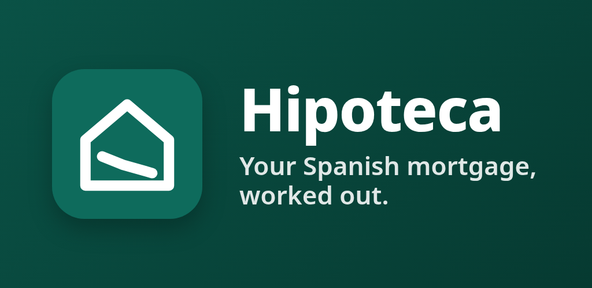
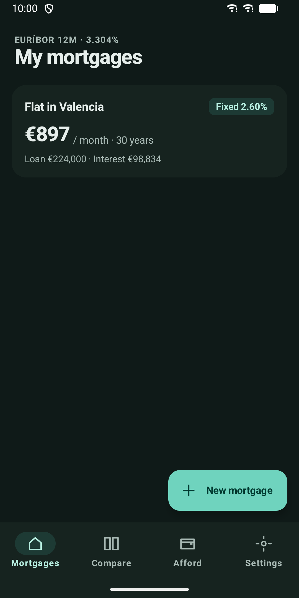
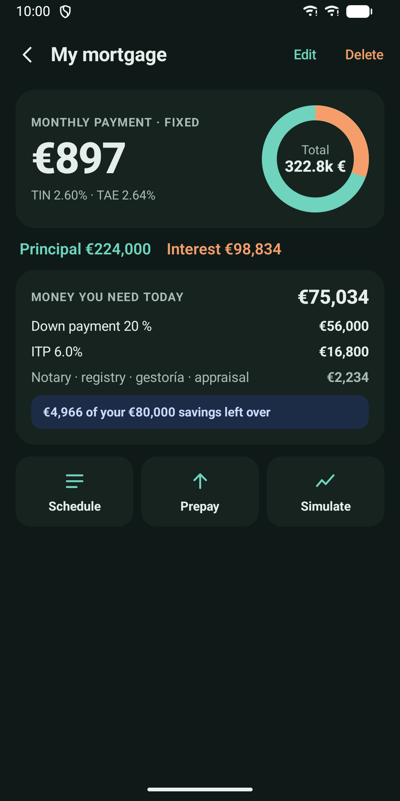
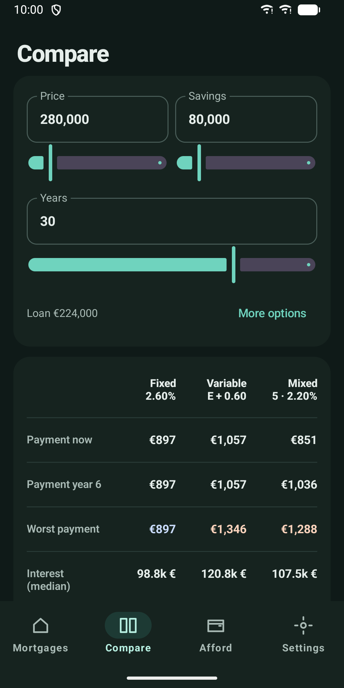
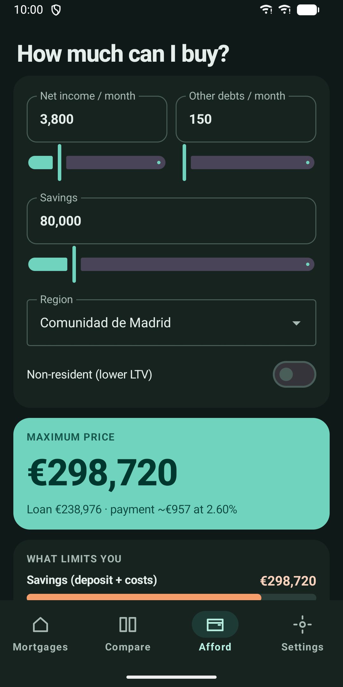

Hipoteca: Hypothekenrechner
Spanische Hypothek planen, vergleichen, verfolgen: Kosten, Steuern, Euríbor.









Über die App
Hipoteca hilft dir, eine Hypothek für eine Immobilie in Spanien zu planen und im Blick zu behalten. Du startest mit einer einfachen Frage, siehst die echten Zahlen und verfolgst den Kredit, den du schon abbezahlst. WIE VIEL KANN ICH MIR LEISTEN? Gib dein monatliches Nettoeinkommen, sonstige Schulden, Ersparnisse, Region und Wohnsitz ein. Die App zeigt den höchsten erreichbaren Kaufpreis, den Kredit und die Monatsrate und sagt dir, ob deine Ersparnisse oder dein Einkommen die Grenze setzen. FEST, VARIABEL ODER GEMISCHT? Ein festes, ein variables und ein gemischtes Angebot nebeneinander: Rate heute, Rate im 6. Jahr, Rate im schlechtesten Fall, mittlere Gesamtzinsen und der Euríbor-Wert, ab dem variabel nicht mehr günstiger ist als fest. WAS EIN KREDIT WIRKLICH KOSTET Speichere deine eigenen Angebote mit Preis, Ersparnissen, Region, Neubau oder Bestand, Laufzeit, Zinsart, Alter und Wohnsitz. Das Ergebnis zeigt Monatsrate, TIN und TAE, Tilgung gegenüber Zinsen und das Geld, das du am ersten Tag brauchst: Anzahlung, ITP oder IVA plus AJD, Notar, Grundbuch, Gestoría und Gutachten. Außerdem prüft die App, ob sich die Zusatzprodukte der Bank (Gehaltseingang, Wohngebäudeversicherung, Lebensversicherung) für dich lohnen. KAUFNEBENKOSTEN NACH REGION Die Steuerregeln aller spanischen Regionen sind eingebaut, auch die Sätze für junge Käufer. Regionen, deren Daten noch nicht aus zwei Quellen bestätigt sind, werden deutlich markiert. WAS, WENN DER EURÍBOR STEIGT? Rechne mit bestem, mittlerem und schlechtestem Euríbor-Szenario oder mit 1.000 zufälligen Verläufen samt Fächerdiagramm, Ratenspannen und dem Anteil der Verläufe, in denen du mehr zahlst als heute. SONDERTILGUNG Probiere eine einmalige oder jährliche Sondertilgung aus und vergleiche kürzere Laufzeit mit niedrigerer Rate, nach Abzug der gesetzlichen Vorfälligkeitsgebühr. DEINE LAUFENDE HYPOTHEK Gib ein, wann du unterschrieben hast, Betrag, Laufzeit und Zins. Du siehst, was du heute noch schuldest, wie viel schon bezahlt ist, wann der Kredit endet, was noch zu zahlen ist und wie stark die Rate springt, wenn ein gemischter Kredit variabel wird. Mit dem Saldo deiner Bank wird es genau. Ein Widget zeigt Restschuld, Rate und Enddatum auf dem Startbildschirm. TILGUNGSPLAN UND EXPORT Jahrestabelle und Restschuld-Diagramm. Teile den Plan als PDF oder als CSV, die sich in spanischen Tabellenprogrammen richtig öffnet. PRIVAT Kein Konto, keine Anmeldung. Deine Hypothekendaten bleiben auf deinem Handy. Auf einigen Seiten erscheint ein kleines Werbebanner; ein einmaliger Kauf entfernt es. Gut zu wissen - Nur für Spanien, in Euro. - Der Euríbor wird nicht heruntergeladen. Die App enthält einen aktuellen Wert, den du in den Einstellungen ändern kannst. - Auf Deutsch, Spanisch und Englisch. - Die Ergebnisse sind Schätzungen und ersetzen kein Angebot und keine Beratung deiner Bank.